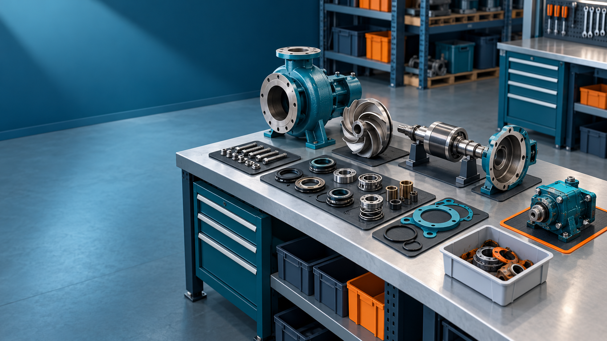

Extend Manufacturing Unbuild with documented component inspection, individual recovery destinations, cost allocation records, and an identified residual assembly for partial disassembly.
Requires Odoo 20.0 Community with Manufacturing and Stock Accounting. The Odoo 20 test suite covers BOM-backed full and partial execution, missing and recovered-scrap outcomes, residual stock creation, MO component resolution, rollback on valuation mismatch, native Unbuild behavior, component lot/serial traceability, cross-company access isolation, and six accounting valuation combinations. A concurrent transaction smoke test verified single-claim execution behavior.
Known limitations: Other localization charts and custom account configurations, finished-product serial scenarios, and exhaustive multi-company role combinations remain unverified. The included cover image is a neutral product visual and can be replaced with branded marketing artwork for a specific Apps listing.